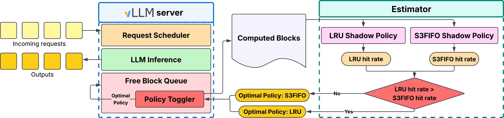
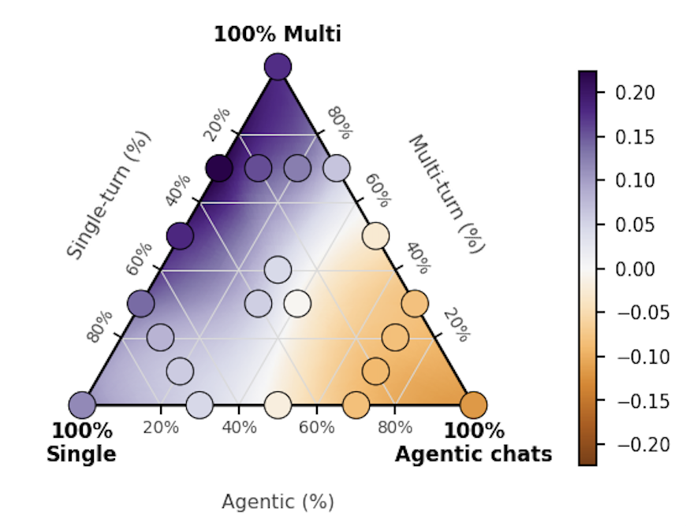
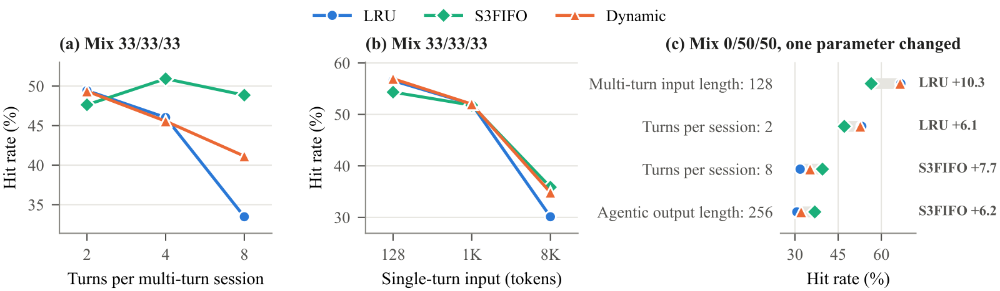

目录 · 8 节
1它到底在解决什么问题？2为什么不按请求类型分开管？3WAKMan 怎么做：两个影子缓存，每 15 分钟比一次4实验：没有哪一种策略总是赢5只改一个参数，胜负也会翻转6我认为它的局限7一个服务团队可以怎么试8结论同一台 vLLM 服务器，前缀缓存该用哪种淘汰策略，答案取决于此刻进来的是什么流量。agent 请求几秒后就带着同样的历史回来，最近用过的块最该留着，默认的 LRU 正合适；单轮请求里的热门系统提示和多轮对话的历史隔很久才回来，中间被大量一次性内容冲刷，要靠 S3FIFO（一种优先保护反复被用的块的淘汰策略）才留得住。作者在 20 种请求混合上实测，LRU 赢 8 种、S3FIFO 赢 12 种，而且同一种混合里只改一个参数也能让胜负翻转。他们的做法很朴素：每 15 分钟把刚过去的流量在两套模拟缓存上各重放一遍，下一段时间就用命中率更高的那套。平均下来，它比只用 LRU 多 5 个点的命中率，最坏情况下与当次最优策略的差距也是三者里最小的。
做大模型服务和推理平台的团队值得花十分钟读，理由是它的结论可以直接用：淘汰策略没有通用最优解，最省事的稳健做法是让线上流量自己选。它只用 vLLM 已经算好的块哈希，不需要知道请求类型，也不读提示内容，适合多业务共用一套服务、拿不到请求元数据的场景。但证据偏薄：全部是合成流量，每条只有一小时，而且相对“直接换成 S3FIFO”，平均只多赢了半个点。核心思想一句话：用旧流量离线模拟两种策略，用模拟结果决定下一段时间的线上策略。
它到底在解决什么问题？
前缀缓存能让开头相同的请求跳过重复的 prefill。显存有限，块满了就要淘汰，淘汰错了下次就得重算，延迟和成本都上去。vLLM 默认用 LRU 淘汰。
用一个只能放 3 个块的缓存看两种情况（示意）：
| 流量 | 到达顺序 | LRU 的结果 | S3FIFO 的结果 |
|---|---|---|---|
| 单轮为主 | 热门系统提示 P，然后三段一次性内容 x1、x2、x3，然后 P 又来了 | x3 进来时 P 是最久没用的，被挤掉，P 回来时未命中 | P 之前命中过，住在受保护的主队列里；x1 到 x3 只进试用队列，先被淘汰，P 命中 |
| agent 为主 | 一个 agent 会话的历史 H 刚进缓存，几秒后下一步带着 H 回来，中间插进几段别的新内容 | H 是最近用过的，留着，命中 | H 还在试用队列里，被新内容挤出去，未命中 |
S3FIFO 是一种抗“扫描污染”的淘汰策略：新块先进一个小的试用队列，只有在里面被再次用到才升进主队列；试用期没被用到的直接淘汰，只留下一个“幽灵”记录，如果它很快又回来就直接进主队列。它保护的是反复被用的块，代价是刚进来、马上要用第二次的块容易在试用期就被淘汰。
所以两种策略各有输场。论文里，agent 会话两步之间的间隔中位数是 6 秒，多轮对话是 60 秒，单轮请求的系统提示则要等同一个服务的下一次调用。前者靠新近，后两者靠频次。生产流量通常三种混在一起，比例还随时间变化。
为什么不按请求类型分开管？
已有的系统确实这么做：给 agent、对话、单轮请求各开一个队列，或者用历史数据拟合每类请求多久会回来。作者指出它们有两个前提：服务端知道每个请求属于哪类、是第几轮；流量的时间规律稳定。在多业务共用的部署里这两条都不成立。对话历史是在客户端拼好再发过来的，服务端只看到一长串 token；出于数据隐私限制，服务端也不能去读提示内容判断类型。流量比例一直在漂，去年拟合的分布今天未必还对。
于是只剩一条路：只用缓存自己看得到的东西做决定。
WAKMan 怎么做：两个影子缓存，每 15 分钟比一次
WAKMan（Workload Aware KVCache Manager，作者给这个系统起的名字）挂在 vLLM 旁边，流程如下：

| 阶段 | 做什么 | 产出 |
|---|---|---|
| 记录 | 每个时间窗内记下每个请求的到达时间和块哈希，以及空闲块队列的平均长度 | 一段流量记录 |
| 重放 | 把两个模拟缓存的容量都设为空闲块队列的平均长度。重放最近一个时间窗的流量，比较 LRU 和 S3FIFO 的模拟命中率 | 两个命中率 |
| 切换 | 为下一个时间窗选择淘汰策略：S3FIFO 的模拟命中率更高时选 S3FIFO，否则选 LRU | 线上策略 |
为什么用空闲块队列的平均长度当模拟容量？vLLM 里正在被请求使用的块不能淘汰，淘汰策略真正能管的只有空闲队列里的块，所以模拟器的容量应该等于这部分，而不是整块显存。
为什么能做到不碰提示内容？vLLM 做前缀缓存时本来就给每 16 个 token 的块算一个哈希，相同前缀得到相同哈希。模拟器按请求到达的顺序重放。LRU 遇到的块哈希如果已在队列中，就记一次命中；否则插入，缓存满时淘汰最久未用的块。两种策略的模拟命中率都用命中的块哈希数除以遇到的全部块哈希数，不按每个请求连续命中的前缀长度统计。模拟器不需要 GPU，也不需要模型。
算一个例子（示意）：过去 15 分钟里一共出现 10,000 个块哈希，LRU 模拟命中 5,200 个，S3FIFO 命中 5,600 个，命中率分别是 52% 和 56%，下一个 15 分钟就切到 S3FIFO。
和 ARC 这类经典自适应缓存比，区别在粒度。ARC 在一个缓存内部按每次访问微调新近和频次两部分的比例；WAKMan 每个时间窗整体换一次策略。好处是淘汰路径保持简单，任何能写成模拟器的策略都能加进候选池。
实验：没有哪一种策略总是赢
实验用 Gemma 4 的一个 26B 参数的 MoE 模型，跑在 4 张 RTX PRO 6000 上，显存利用率故意设成 0.5，每条流量一小时、每秒平均 1.5 个请求。这个到达率是调出来的：再低缓存几乎不淘汰，再高块还没被复用就被挤掉，两种情况下策略都无所谓。20 种流量只改三类请求的比例，写成“单轮/多轮/agent”的百分比。指标是按提示 token 计的前缀缓存命中率。

下表摘几行有代表性的结果（“理想”是无限大缓存的命中率，任何策略都不会超过它）：
| 混合（单轮/多轮/agent） | LRU | S3FIFO | WAKMan | 理想 |
|---|---|---|---|---|
| 0/0/100 | 69.3 | 57.6 | 69.2 | 84.7 |
| 100/0/0 | 37.8 | 49.5 | 46.5 | 50.1 |
| 50/50/0 | 23.4 | 41.4 | 38.6 | 60.4 |
| 0/100/0 | 8.4 | 26.0 | 15.0 | 67.1 |
| 30/30/40 | 50.9 | 50.4 | 51.1 | 74.3 |
| 平均差距 | 7.09 | 2.53 | 2.04 | — |
| 最大差距 | 22.4 | 11.7 | 11.0 | — |
“差距”指在同一种混合上，三者里最好的命中率减去该策略自己的命中率。纯 agent 流量上 LRU 比 S3FIFO 高约 12 个点，因为 agent 的下一步几秒就回来，S3FIFO 的试用队列来不及留住它；多轮和单轮多的流量上 S3FIFO 大幅领先，因为它能保住热门提示和长对话历史。这说明选错策略的代价是两位数的命中率。
WAKMan 的平均差距和最大差距都最低。看两种静态策略相差超过 1 个点的那些混合：把 WAKMan 比差的那个多出的命中率，除以好的减差的，中位数是 84%。也就是说，两者差 10 个点时，它通常能拿回其中约 8 个点。
它在纯多轮流量上输得最多：15.0，S3FIFO 是 26.0。原因是它从 LRU 起步，第一次切换要等 15 分钟，而每条流量只有一小时，四分之一的时间都在用错的策略。作者认为流量更长时这个启动成本会变小。
只改一个参数，胜负也会翻转
消融要回答的是：比例固定时，最优策略还会变吗？在三类各占三分之一的流量上，多轮会话平均 2 轮时 LRU 赢，平均 8 轮时 S3FIFO 赢 15.4 个点。原因是轮数越多，早期历史被反复读的次数越多，频次信号越强。单轮请求的输入长度也有同样效果，128 token 时 LRU 好，8K token 时 S3FIFO 好，因为长的一次性内容冲刷缓存的力度更大。

这张图里也能看出 WAKMan 的上限：8 轮那一点它的命中率约 41%，比 S3FIFO 的约 49% 低不少，只是比 LRU 好。作者的说法是它“向 S3FIFO 靠拢”而不是追平，原因同样是前 15 分钟固定用 LRU。
我认为它的局限
第一，证据只来自合成流量。20 种混合加上消融，全部由作者自己的生成器产生，每条一小时。真实流量里请求类型的切换速度、热门提示的分布都可能不同，而这正是决定切换是否值得的因素。
第二，相对“直接换成 S3FIFO”的收益很小。平均差距 2.04 对 2.53，只差约半个点；在单轮为主的流量上，WAKMan 反而比 S3FIFO 低 3 个点左右（46.5 对 49.5）。如果你的流量没有明显的 agent 成分，静态 S3FIFO 可能就够了。
第三，切换本身有成本，论文没有量化。作者在附录里承认：两种策略命中率接近时，或者流量在两种模式间快速来回时，重放和切换的开销可能超过收益，而时间窗 T 该怎么定也还没研究。
一个服务团队可以怎么试
第一步，先离线回放。把线上一天的块哈希记下来，用 LRU 和 S3FIFO 两个模拟器各跑一遍，按 15 分钟切片看命中率，看两者是否经常换位。如果全天都是同一个赢，直接换成那一个就行。
第二步，经常换位再上 WAKMan，同时把切片缩短，比如从 5 分钟试起，看启动和切换期的损失能不能压下来。
第三步，用首 token 延迟和 prefill 计算量判断成败，命中率只是中间指标。
做推荐和搜索的团队如果在同一套 LLM 服务上同时跑 agent 式检索和单轮生成，这套方法的前提最容易成立。
结论
一句话：前缀缓存的淘汰策略应该跟着流量变，而重放近期流量能帮服务端选择下一个时间窗的策略。但如果之后流量突然变了，这个策略就可能不合适，服务端要等到下次决策才会重新选择。
| 维度 | 评价 |
|---|---|
| 问题重要性 | 中高。agent 流量越来越多，固定用 LRU 或 S3FIFO 都会在某些时段损失两位数的命中率 |
| 方法创新性 | 低到中。影子缓存加周期切换是经典手法，新在用在 KV 前缀缓存并说明了为什么需要它 |
| 实验证据 | 偏弱。只有合成流量和一个模型，相对 S3FIFO 的平均收益约半个点 |
| 工程成本 | 低。只需记录块哈希和两个纯软件模拟器，不改模型输出 |
| 是否值得尝试 | 先做离线回放，两种策略在自己的流量上确实经常换位时再上 |
读完这篇，你觉得
夜读鸮记下了，谢谢你的反馈。
点一下即可，无需登录；再点一次撤回。只统计匿名次数，不记录你是谁。
讨论
欢迎补充实验细节、复现经验或不同看法。需 GitHub 登录。
正在加载讨论…